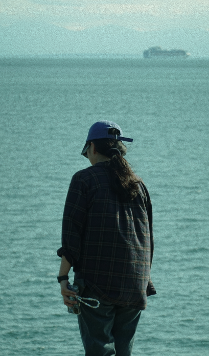
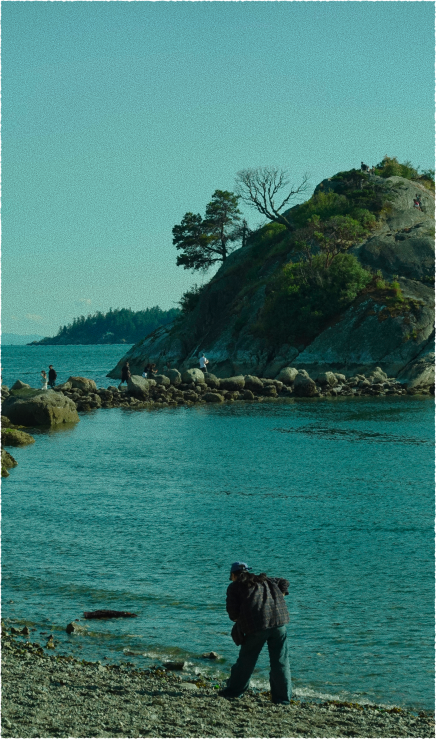

About Clare
I was born in South Korea and now based in Canada, carrying a unique perspective shaped by two distinct cultures. I am currently studying in the School of Interactive Arts and Technology (SIAT) at Simon Fraser University, pursuing a degree with a focus on Graphic Design and UI/UX Interaction Design.
While I’ve always had a passion for the arts, I did not truly discover design until university. I began my academic journey in Computing Science, but it was through exploring HTML and CSS that I was introduced to web design, a moment that completely opened my eyes to the creative possibilities of the digital world.


Since then, I have developed a love for creating across multiple mediums, from 3D visualization and prototyping to branding, logo design, and interaction design. Each project is an opportunity to combine creativity with problem-solving, transforming ideas into engaging, functional experiences.
When I’m not designing, I love being near the water. Whether it’s swimming, exploring the ocean, or admiring its fascinating marine life. My curiosity also takes me traveling to new places, where I find inspiration through different scenery. At home, I enjoy getting lost in the twists of a good thriller or detective novel, creating digital art, and immersing myself in the rich narratives of story-driven games.